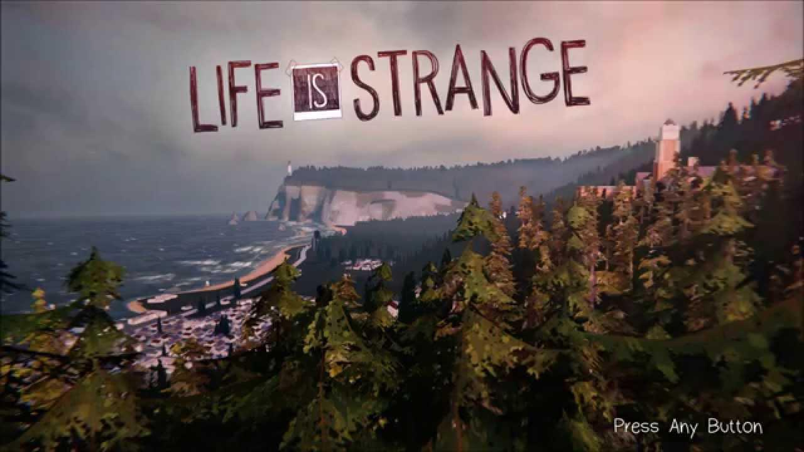
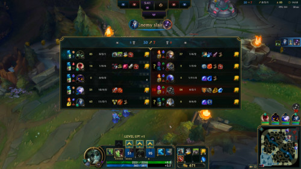

2차시: 실감미디어와 사용자 경험 혁신
🔹세션 목표
-
사용자 심리와 행동 이해를 통한 UX 설계 방법론 학습
-
최신 기술 동향과 UX 트렌드 분석
- AR, VR, MR 등 실감미디어의 최신 기술 소개
사용자 경험(UX: User Experience) 디자인 핵심 요소
❏ 감각적 UX
1. 시각 감각
- 시각 감각의 특징
- 실감 미디어에서 시각 감각은 가장 직관적이고 빠르게 정보를 전달하는 요소로, 몰입감을 좌우하는 핵심 요소입니다.
- 고해상도 그래픽과 사실적인 3D 렌더링을 활용.
- 색상, 조명, 대비를 통해 시각적 강조 및 사용자 유도.
- 예시
- VR 환경에서 깊이감을 주는 적절한 원근법과 움직임의 일관성.
- 《Beat Saber》는 빠르게 변화하는 시각적 큐를 통해 몰입감을 극대화.
- 《Pokemon Go》는 AR 기술을 활용하여 현실과 가상을 융합하여 사용자의 몰입감을 높임.
비주얼 가이던스 디자인
사용자가 콘텐츠를 쉽게 인식하고 이해할 수 있도록 시각적 요소를 활용하여 디자인이 필요합니다.
색상(Color)
- 색상의 역할
- 색상은 사용자의 감정과 주의를 조절하는 강력한 도구입니다.
- 특정 색상은 특정 감정을 유발하거나 강조를 통해 사용자 행동을 유도할 수 있습니다.
- 색상 대비를 통해 중요한 요소를 강조하고 시각적 계층 구조를 형성합니다.
- 예시
- CTA(Call to Action) 버튼에 대비되는 색상 사용: 예를 들어, 전체적인 디자인이 파란색 계열이라면 CTA 버튼을 주황색으로 하여 사용자의 주목도를 높입니다.
- 건강 앱에서 차분한 색상 사용: 파란색이나 녹색과 같은 차분한 색상을 사용하여 안정감과 신뢰성을 전달합니다.
- 게임에서 분위기 조성: 《Inside》와 같은 게임은 어두운 색조를 사용하여 미스터리하고 긴장감 있는 분위기를 연출합니다.
연출 및 조명
-
조명의 역할
- 조명은 3D 환경에서 현실감을 높이고 분위기를 형성하는 데 필수적입니다.
- 빛의 방향, 강도, 색상을 통해 사용자에게 중요한 정보를 전달할 수 있습니다.
- 그림자와 반사를 활용하여 깊이감과 공간감을 제공합니다.
-
예시
-
공포 게임에서의 조명 사용: 어두운 조명과 갑작스러운 섬광 효과로 긴장감과 공포감을 조성합니다.
-
현실적인 환경 구현: 《The Last of Us Part II》는 자연광과 인공 조명을 적절히 활용하여 현실감 넘치는 환경을 제공합니다.
-
시간대 변화 표현: VR 건축 투어에서 조명을 조절하여 아침, 낮, 저녁 등 시간대에 따른 분위기 변화를 체험하게 합니다.
대비(Contrast)
-
대비의 역할
- 대비는 요소 간의 차이를 강조하여 중요한 정보를 부각시키는 데 사용됩니다.
- 색상, 밝기, 크기 등을 통해 대비를 조절할 수 있습니다.
- 충분한 대비는 가독성을 높이고 시각적 피로를 줄입니다.
-
예시
- 텍스트와 배경의 대비: 검은 배경에 흰색 텍스트를 사용하여 가독성을 높입니다.
- 시각적 강조: 《Monument Valley》는 강렬한 색상 대비를 활용하여 시각적으로 인상적인 장면을 연출합니다.
- 상태 표시: 활성화된 버튼은 선명한 색상으로, 비활성화된 버튼은 흐린 색상으로 표시하여 기능 상태를 명확히 전달합니다.
UX에서 타이포그래피와 아이콘의 중요성
가독성과 직관성을 높이기 위해 폰트나 아이콘의 크기, 색상, 배치 등을 고려하여 디자인이 필요합니다.
타이포그래피(Typography)
-
타이포그래피의 역할
- 글자의 크기, 색상, 폰트, 간격 등을 조절하여 가독성을 높이는 디자인 기법입니다.
- 적절한 폰트 선택은 브랜드 이미지와 사용자 감정에 영향을 줍니다.
- 계층 구조를 통해 정보의 중요도를 시각적으로 표현합니다.
-
예시
- 뉴스 앱에서의 폰트 사용: 신뢰성과 전통성을 강조하기 위해 세리프 폰트를 사용합니다.
- 어린이용 앱에서의 타이포그래피: 큰 글자와 단순한 폰트를 사용하여 읽기 쉽고 친근한 느낌을 줍니다.
- 게임에서 분위기 형성: 《Firewatch》는 독특한 폰트 스타일을 사용하여 게임의 감성적인 분위기를 강화합니다.


아이콘(Icon)
-
아이콘의 역할
- 아이콘은 사용자가 쉽게 인식할 수 있는 시각적 요소로, 복잡한 정보를 직관적으로 전달합니다.
- 일관된 스타일의 아이콘은 사용자 인터페이스의 통일성을 높입니다.
- 문화적 차이와 일반적인 인식을 고려하여 아이콘을 선택해야 합니다.
-
예시
-
삭제 기능의 아이콘: 휴지통 모양의 아이콘을 사용하여 '삭제' 기능을 직관적으로 전달합니다.
-
공유 기능의 아이콘: 대부분의 사용자에게 익숙한 '화살표' 아이콘을 사용하여 공유 기능을 나타냅니다.
-
네비게이션 아이콘: 《Instagram》은 하단 메뉴에 심플하고 일관된 아이콘을 사용하여 쉽게 탐색할 수 있도록 합니다.

2. 청각 감각
- 청각 감각의 특징
- 청각 감각은 시각 정보를 보완하고 사용자 경험에 깊이를 더해주는 중요한 요소입니다.
- 소리는 공간 인식과 정서적 반응을 강화하며, 사용자의 행동에 직접적인 피드백을 제공합니다.
- 3D 오디오 기술과 음향 효과를 활용하여 현실감과 몰입도를 높일 수 있습니다.
- 예시
- 게임 속에서 발자국 소리의 방향성과 거리감을 통해 적의 위치를 파악합니다.
- 《The Last of Us》는 섬세한 음향 디자인으로 긴장감을 조성하여 사용자의 몰입도를 높입니다.
- 《Beat Saber》는 음악의 리듬과 동기화된 소리 효과를 통해 플레이어의 몰입감을 극대화합니다.
음향 디자인 원칙
사용자가 소리를 통해 정보를 직관적으로 이해하고 감정적으로 반응할 수 있도록 음향 요소를 활용하여 디자인이 필요합니다.
음악과 배경음
- 음악과 배경음의 역할
- 음악은 사용자 감정에 직접적으로 영향을 미치며, 분위기와 톤을 설정하는 데 중요한 요소입니다.
- 배경음은 환경의 현실감과 생동감을 높여주고, 사용자의 집중도를 향상시킵니다.
- 예시
- 공포 게임에서 긴장감 조성: 낮은 주파수의 음향과 불규칙한 소리를 사용하여 긴장감을 높입니다.
- 명랑한 분위기의 앱: 밝고 경쾌한 배경음악을 사용하여 사용자의 긍정적인 감정을 유도합니다.
- 환경 소리 활용: 자연 소리나 도시의 소음을 배경음으로 사용하여 현실감을 제공합니다.
음향 효과(Sound Effects)
- 음향 효과의 역할
- 사용자의 행동에 대한 즉각적인 피드백을 제공하여 상호작용을 강화합니다.
- 특정 이벤트나 상태 변화를 사용자에게 알리는 데 사용됩니다.
- 작은 소리라도 반복적으로 사용하면 사용자에게 강한 인상을 줄 수 있습니다.
- 예시
- 버튼 클릭 소리: 사용자가 버튼을 눌렀을 때 클릭 소리를 내어 입력이 인식되었음을 알립니다.
- 알림음: 새로운 메시지나 알림이 있을 때 고유한 소리로 사용자에게 전달합니다.
- 레벨 업 사운드: 게임에서 캐릭터가 레벨업할 때 특별한 음향 효과로 성취감을 높입니다.
3D 오디오 기술
- 3D 오디오의 역할
- 소리의 방향성과 거리감을 구현하여 현실감을 높이고 공간 인식을 강화합니다.
- 사용자가 소리만으로도 주변 환경을 파악할 수 있게 합니다.
- 예시
- VR 게임에서의 3D 사운드: 적이 뒤에서 접근할 때 소리가 뒤에서 들려 사용자가 즉각 반응할 수 있습니다.
- 음악 어플리케이션에서의 공간음향: 라이브 콘서트 현장의 입체감을 제공하여 몰입도를 높입니다.
- 시뮬레이션 훈련: 조종사 훈련에서 3D 오디오를 사용하여 현실적인 환경을 제공합니다.
청각적 피드백(Auditory Feedback)
- 청각적 피드백의 역할
- 사용자의 행동에 따른 즉각적인 소리 피드백으로 상호작용의 효과를 증대시킵니다.
- 시각적인 정보와 함께 제공되어 이해도를 높입니다.
- 예시
- 입력 오류 시 경고음: 잘못된 입력이 발생하면 경고음을 내어 사용자가 즉시 인식할 수 있도록 합니다.
- 성공적인 작업 완료음: 작업이 성공적으로 완료되었을 때 긍정적인 소리를 내어 성취감을 줍니다.
- 진동과 소리의 결합: 스마트폰에서 알림이 올 때 진동과 함께 소리가 나도록 하여 인지도를 높입니다.
음성 사용자 인터페이스(Voice User Interface)
- 음성 인터페이스의 역할
- 음성을 통해 사용자와 시스템 간의 자연스러운 상호작용을 제공합니다.
- 손을 사용하지 않고도 시스템을 제어할 수 있어 편의성을 높입니다.
- 예시
- 음성 비서 서비스: Siri, Google Assistant 등을 통해 음성 명령으로 다양한 작업을 수행합니다.
- 내비게이션 앱에서의 음성 안내: 운전 중 시선을 분산시키지 않고도 길 안내를 받을 수 있습니다.
- 스마트 홈 제어: 음성으로 조명, 온도 등을 조절하여 편의성과 접근성을 향상시킵니다.
청각 디자인에서의 접근성 고려
다양한 사용자의 청각 능력을 고려하여 디자인해야 합니다.
자막 및 시각적 대체 수단
- 역할
- 청각 장애인이나 소리를 들을 수 없는 환경의 사용자를 위해 자막이나 시각적 신호를 제공합니다.
- 예시
- 영상 콘텐츠의 자막 제공: 동영상이나 게임에서 음성 대사와 음향 정보를 자막으로 제공합니다.
- 시각적 알림: 소리 알림과 함께 화면에 팝업이나 아이콘을 표시하여 정보를 전달합니다.
음량 및 음질 조절 기능
- 역할
- 사용자가 자신의 청력 상태나 환경에 맞게 음량과 음질을 조절할 수 있도록 합니다.
- 예시
- 개별 음량 조절: 배경음악, 효과음, 음성 등의 음량을 각각 조절할 수 있게 합니다.
- 이퀄라이저 제공: 사용자가 선호하는 음질로 설정할 수 있도록 이퀄라이저 기능을 제공합니다.
3. 촉각 감각
- 촉각 감각의 특징
- 촉각은 물리적인 상호작용을 통해 사용자에게 현실감을 제공하는 중요한 감각입니다.
- 햅틱 기술을 활용하여 진동, 압력, 온도 등의 감각을 모방함으로써 사용자 경험을 향상시킵니다.
- 즉각적인 촉각 피드백은 사용자의 행동에 대한 반응성을 높이고 몰입도를 강화합니다.
- 예시
- VR 컨트롤러에서 물체를 잡거나 부딪힐 때 발생하는 진동 피드백.
- Oculus Touch 컨트롤러는 사용자가 물건을 잡거나 조작할 때 섬세한 진동을 제공하여 현실감을 높입니다.
- 스마트폰 게임에서 화면을 터치할 때 느껴지는 햅틱 피드백으로 상호작용을 강화합니다.
햅틱 디자인 원칙
사용자가 촉각을 통해 시스템과 상호작용하고 정보를 직관적으로 이해할 수 있도록 촉각 요소를 활용하여 디자인이 필요합니다.
진동 피드백(Vibration Feedback)
- 진동 피드백의 역할
- 사용자의 행동에 대한 즉각적인 반응을 제공하여 상호작용의 효과를 증대시킵니다.
- 이벤트 발생, 알림, 상태 변화 등을 사용자에게 전달하는 데 사용됩니다.
- 예시
- 스마트폰 알림: 메시지나 알림이 도착했을 때 진동으로 사용자에게 전달합니다.
- 게임 컨트롤러의 진동: 플레이 중 캐릭터가 피해를 입거나 특정 이벤트가 발생할 때 진동으로 피드백을 제공합니다.
- 터치 스크린의 햅틱 피드백: 가상 키보드 입력 시 키를 눌렀을 때 미세한 진동을 제공하여 실제 키보드를 누르는 느낌을 재현합니다.
힘 피드백(Force Feedback)
- 힘 피드백의 역할
- 사용자가 조작하는 장치에 저항이나 압력을 가하여 현실감과 몰입도를 높입니다.
- 물체의 무게감, 질감, 강도 등을 모방하여 사용자 경험을 향상시킵니다.
- 예시
- 레이싱 휠 컨트롤러: 자동차 게임에서 도로의 상태나 차량의 움직임에 따라 스티어링 휠에 저항이 발생합니다.
- VR 글러브: 가상 객체를 잡았을 때 손가락에 저항을 주어 실제 물체를 잡는 느낌을 제공합니다.
- 로봇 팔 조작: 의료 수술용 로봇에서 의사가 원격으로 조작할 때 힘 피드백을 통해 섬세한 조작이 가능합니다.
온도 및 질감 피드백
- 온도 및 질감 피드백의 역할
- 촉각 디스플레이를 통해 온도 변화나 표면의 질감을 전달하여 현실감을 증대시킵니다.
- 예시
- 촉감 디스플레이: 특수한 표면을 통해 사용자에게 다양한 질감을 느끼게 합니다.
- 온도 변화 장치: 가상 환경에서 뜨거운 물체나 차가운 물체를 만질 때 실제로 온도 변화를 느끼게 합니다.
촉각 피드백의 디자인 고려사항
- 과도한 피드백 자제
- 지나치게 강한 진동이나 빈번한 피드백은 사용자에게 피로감을 줄 수 있으므로 적절한 수준으로 조절해야 합니다.
- 사용자 안전 고려
- 힘 피드백이나 온도 변화를 제공할 때 사용자의 안전에 유의해야 하며, 과도한 자극을 피해야 합니다.
- 접근성 향상
- 청각이나 시각에 제약이 있는 사용자를 위해 촉각 피드백을 활용하여 정보 전달을 보완할 수 있습니다.
촉각 디자인에서의 접근성 고려
다양한 사용자의 촉각 능력과 편의를 고려하여 디자인해야 합니다.
사용자 설정 가능 피드백
- 역할
- 사용자가 촉각 피드백의 강도나 빈도를 조절할 수 있도록 옵션을 제공합니다.
- 예시
- 진동 강도 조절: 스마트폰 설정에서 진동의 세기를 사용자 취향에 맞게 조절할 수 있습니다.
- 햅틱 피드백 활성화/비활성화: 앱이나 게임 내에서 촉각 피드백 기능을 켜거나 끌 수 있도록 합니다.
대체 피드백 제공
- 역할
- 촉각 피드백을 느낄 수 없는 사용자나 장치 환경을 고려하여 시각적 또는 청각적 대체 피드백을 제공합니다.
- 예시
- 시각적 효과 연동: 진동이 발생할 때 화면에 시각적인 효과를 함께 제공하여 정보를 전달합니다.
- 음향 효과 추가: 촉각 피드백과 함께 소리를 제공하여 피드백을 강화합니다.
❏ 인지적 UX
1. 사용자 행동을 기반으로 한 UX
- 특징
- 사용자가 시스템을 직관적으로 이해하고 쉽게 사용할 수 있도록 설계하는 것이 중요합니다.
- 사용자의 행동 패턴과 심리적 모델을 분석하여 인터페이스를 최적화합니다.
- 시선 추적, 제스처 인식 등 자연스러운 인터페이스를 제공하여 학습 곡선을 낮춥니다.
- 예시
- 스와이프 제스처를 활용한 탐색: 스마트폰에서 화면을 좌우로 스와이프하여 페이지를 넘기는 동작은 직관적이며 학습이 필요 없습니다.
- 가이드 투어 제공: 새로운 앱이나 게임을 처음 사용할 때 단계별로 기능을 안내하여 사용자가 쉽게 적응할 수 있도록 합니다.
- 시선 추적 인터페이스: VR 환경에서 사용자의 시선을 따라 메뉴가 나타나거나 선택되는 인터페이스는 직관성을 높입니다.
사용자 여정 맵(Journey Map) 작성
사용자의 전체 경험 과정을 시각화하여 각 단계에서의 요구사항과 문제점을 파악하고 개선합니다.
사용자 여정 맵의 구성 요소
- 페르소나(Persona) 정의
- 대표적인 사용자 유형을 설정하여 그들의 목표와 행동 패턴을 이해합니다.
- 터치포인트(Touchpoints) 식별
- 사용자가 시스템과 상호작용하는 모든 지점을 파악합니다.
- 사용자 행동 및 감정 분석
- 각 단계에서 사용자가 무엇을 하고 어떤 감정을 느끼는지 분석합니다.
예시
- 온라인 쇼핑몰의 사용자 여정 맵
- 탐색 단계: 제품 검색 → 문제점: 원하는 제품을 찾기 어려움
- 구매 단계: 장바구니에 담기, 결제 → 개선점: 결제 과정 간소화
- 사후 서비스 단계: 배송 추적, 리뷰 작성 → 기회: 배송 알림 강화, 리뷰 작성 유도
사용성 테스트와 A/B 테스트의 중요성
실제 사용자 데이터를 기반으로 UX를 최적화하여 인지적 부담을 줄이고 효율성을 높입니다.
사용성 테스트
- 목적
- 사용자들이 제품을 어떻게 사용하는지 관찰하여 문제점을 발견하고 개선합니다.
- 방법
- 대표 사용자 그룹을 선정하여 특정 과제를 수행하도록 요청하고 그 과정을 관찰합니다.
- 예시
- 앱 내 네비게이션 테스트: 사용자가 원하는 기능을 찾는 데 걸리는 시간을 측정하고 어려움을 파악합니다.
A/B 테스트
- 목적
- 두 가지 이상의 디자인이나 기능 변형을 비교하여 어떤 버전이 더 나은 성과를 내는지 확인합니다.
- 방법
- 사용자 그룹을 나누어 각각 다른 버전을 제공하고 성과 지표를 비교합니다.
- 예시
- 버튼 색상 테스트: 구매 버튼의 색상을 파란색과 빨간색으로 나누어 클릭율을 비교하여 더 효과적인 색상을 선택합니다.
2. 사용자 경험의 인지적 측면
- 특징
- 사용자가 정보를 쉽게 이해하고 처리할 수 있도록 인지 과정을 고려한 설계가 필요합니다.
- 정보의 구조화와 시각적 계층화를 통해 중요한 정보를 강조합니다.
- 복잡한 기능은 단계적으로 도입하여 학습 부담을 최소화합니다.
- 예시
- 단순하고 명확한 메뉴 구조: 복잡한 메뉴를 단순화하여 사용자가 원하는 기능을 쉽게 찾을 수 있도록 합니다.
- 점진적 노출(Progressive Disclosure): 초기에는 기본 기능만 보여주고, 필요에 따라 추가 기능을 노출하여 사용자의 인지 부담을 줄입니다.
- 튜토리얼 제공: 처음 사용하는 기능에 대해 간단한 설명이나 데모를 제공하여 이해를 돕습니다.
인지 부하(Cognitive Load) 이론 적용
사용자에게 과도한 정보나 복잡한 인터페이스를 제공하면 인지 부하가 증가하여 사용성이 저하됩니다.
인지 부하 감소 방법
- 정보의 단순화
- 핵심 정보만 제공하고 부가적인 내용은 숨기거나 단계적으로 제공합니다.
- 시각적 계층 구조 확립
- 중요한 요소를 크기, 색상, 위치 등을 통해 강조하여 사용자가 우선순위를 쉽게 파악하도록 합니다.
- 일관성 유지
- 디자인 요소의 일관성을 유지하여 사용자가 새로운 규칙을 학습하지 않도록 합니다.
예시
- 폼 입력 간소화
- 회원 가입 시 필수 정보만 요청하고, 추가 정보는 나중에 받습니다.
- 아이콘과 레이블 사용
- 직관적인 아이콘과 함께 텍스트 레이블을 사용하여 기능을 명확히 합니다.
- 시각적 혼란 최소화
- 불필요한 장식이나 복잡한 배경을 제거하여 콘텐츠에 집중할 수 있게 합니다.
메타포와 상징의 활용
익숙한 개념이나 상징을 사용하여 새로운 기능이나 개념을 쉽게 이해하도록 돕습니다.
메타포 디자인
- 역할
- 현실 세계의 객체나 개념을 인터페이스에 적용하여 사용자가 직관적으로 이해할 수 있도록 합니다.
- 예시
- 폴더 아이콘: 파일을 보관하는 폴더의 이미지를 사용하여 디지털 파일 관리 개념을 전달합니다.
- 쓰레기통 아이콘: 삭제 기능을 휴지통 이미지로 표현하여 직관성을 높입니다.
- 쇼핑 카트 아이콘: 온라인 쇼핑몰에서 구매 예정 상품을 담는 기능을 현실의 쇼핑 카트로 표현합니다.
상징과 아이콘의 사용
- 역할
- 공통적으로 이해되는 기호나 상징을 사용하여 언어 장벽을 넘어서 정보를 전달합니다.
- 예시
- 재생 버튼: 삼각형 모양의 아이콘으로 미디어 재생 기능을 나타냅니다.
- 검색 아이콘: 돋보기 이미지를 사용하여 검색 기능을 표현합니다.
- 설정 아이콘: 기어 모양의 아이콘으로 설정 메뉴를 표시합니다.
3. 직관적 인터페이스 설계
- 특징
- 사용자가 별도의 학습 없이도 쉽게 인터페이스를 이해하고 사용할 수 있도록 설계합니다.
- 자연스러운 제스처나 음성 명령 등을 활용하여 사용자 경험을 향상시킵니다.
- 예시
- 제스처 기반 인터페이스: 스마트폰에서 화면을 두 손가락으로 확대/축소하는 제스처는 직관적입니다.
- 음성 인식 인터페이스: 음성 명령을 통해 검색하거나 기기를 제어하는 것은 사용성을 높입니다.
- 컨텍스트 메뉴 제공: 특정 요소를 길게 누르면 관련 기능을 제공하여 빠른 작업이 가능합니다.
자연스러운 상호작용 디자인
인간의 자연스러운 행동과 일치하는 인터페이스를 설계하여 사용성을 향상시킵니다.
제스처 인식
- 역할
- 터치, 스와이프, 핀치 등 직관적인 동작을 통해 시스템을 제어합니다.
- 예시
- 스와이프 삭제: 이메일 앱에서 메시지를 좌우로 스와이프하여 삭제나 아카이브 기능을 실행합니다.
- 핀치 줌: 이미지 갤러리에서 두 손가락으로 확대나 축소하여 이미지 크기를 조절합니다.
음성 및 얼굴 인식
- 역할
- 음성 명령이나 얼굴 표정을 인식하여 시스템과 상호작용합니다.
- 예시
- 음성 비서 서비스: "헤이 시리"라고 말하여 음성 비서를 호출하고 명령을 전달합니다.
- 얼굴 인식 잠금 해제: 사용자의 얼굴을 인식하여 스마트폰 잠금을 해제합니다.
시선 추적 인터페이스
- 역할
- 사용자의 시선을 추적하여 관심 영역을 파악하고 인터페이스를 조정합니다.
- 예시
- VR 환경에서의 메뉴 선택: 시선을 특정 아이콘에 일정 시간 동안 두면 선택이 이루어집니다.
- 광고 효과 측정: 웹 페이지에서 사용자의 시선 이동을 분석하여 콘텐츠 배치를 최적화합니다.
❏ 정서적 UX
1. 사용자의 감정을 고려한 UX
- 특징
- 사용자 감정을 자극하여 긍정적인 경험을 제공하고, 제품이나 서비스에 대한 감정적 연결을 형성합니다.
- 디자인을 통해 즐거움, 만족감, 신뢰감 등의 긍정적인 감정을 유발하여 사용자 충성도를 높입니다.
- 공감(empathy)을 기반으로 사용자 니즈를 이해하고 이를 반영한 인터랙션을 제공합니다.
- 예시
- 스토리 중심의 게임: 사용자의 선택에 따라 이야기가 전개되는 게임은 감정적 몰입도를 높입니다. 예: 《Detroit: Become Human》
- 감성적인 메시지 전달: 피트니스 앱에서 목표 달성 시 축하 메시지를 제공하여 사용자에게 성취감을 줍니다.
- 친근한 캐릭터 활용: 가상 비서나 챗봇에서 친근한 캐릭터와 대화하여 사용자에게 편안함과 즐거움을 제공합니다.
공감 디자인(Empathy Design)
사용자의 감정 상태와 필요를 깊이 이해하고 이를 디자인에 반영하여 감정적인 연결을 강화합니다.
공감 디자인의 핵심 요소
- 사용자 리서치
- 인터뷰, 설문조사 등을 통해 사용자의 감정과 필요를 파악합니다.
- 페르소나 개발
- 사용자 유형별로 페르소나를 만들어 그들의 목표, 동기, 좌절 등을 이해합니다.
- 사용자 시나리오 작성
- 사용자가 어떤 상황에서 제품이나 서비스를 사용하는지 스토리 형태로 작성하여 공감을 높입니다.
예시
- 의료 앱에서 환자 지원
- 환자의 두려움과 불안을 이해하고 친근한 언어와 디자인을 통해 안심시킵니다.
- 교육 플랫폼에서의 동기 부여
- 학습자의 좌절감을 이해하고 작은 성취에도 보상을 제공하여 학습 동기를 높입니다.
스토리텔링을 통한 감정적 연결
이야기를 통해 사용자에게 감정적 경험을 제공하고 브랜드나 제품에 대한 기억을 강화합니다.
스토리텔링의 활용 방법
- 브랜드 스토리 전달
- 브랜드의 가치와 철학을 이야기 형태로 전달하여 사용자의 공감을 얻습니다.
- 사용자 참여형 스토리
- 사용자가 스토리 전개에 참여하거나 선택할 수 있게 하여 몰입감을 높입니다.
- 감정적 여정 제공
- 제품 사용 과정에서 감정의 변화를 유도하여 깊은 인상을 남깁니다.
예시
- 광고 캠페인에서의 스토리텔링
- 감동적인 이야기로 제품이 아닌 감정을 판매합니다. 예: 애플의 광고
- 게임에서의 내러티브 디자인
- 게임 진행에 따라 스토리가 전개되어 사용자가 캐릭터에 감정 이입을 합니다. 예: 《Life is Strange》
2. 감정적 디자인 원칙
긍정적 감정 유발 요소
디자인을 통해 사용자의 긍정적인 감정을 유발하여 만족도를 높입니다.
미적 디자인(Aesthetic Design)
- 시각적 아름다움
- 조화로운 색상, 균형 잡힌 레이아웃, 고품질 그래픽 등을 사용하여 시각적 만족감을 제공합니다.
- 브랜드 일관성 유지
- 일관된 디자인 언어를 사용하여 신뢰성과 전문성을 전달합니다.
상호작용 즐거움(Delightful Interactions)
- 마이크로 인터랙션
- 작은 상호작용에 재미 요소를 추가하여 사용자의 즐거움을 높입니다.
- 애니메이션 효과
- 자연스럽고 유려한 애니메이션으로 사용자의 흥미를 유발합니다.
개인화 경험
- 맞춤형 콘텐츠 제공
- 사용자 선호도와 행동에 기반한 개인화된 콘텐츠로 만족도를 높입니다.
- 사용자 이름 및 정보 활용
- 사용자에게 직접적인 호칭을 사용하여 친밀감을 형성합니다.
부정적 감정 최소화
사용자의 좌절감, 혼란, 불안 등을 줄이기 위한 디자인 전략을 수립합니다.
오류 방지와 처리
- 명확한 안내
- 사용자가 오류를 범하지 않도록 명확한 지침과 피드백을 제공합니다.
- 친절한 오류 메시지
- 오류 발생 시 비난이 아닌 해결책 중심의 메시지를 제공합니다.
로딩 시간 최적화
- 로딩 표시
- 로딩 중임을 표시하고 예상 시간을 알려 사용자의 불안을 줄입니다.
- 로딩 시간 단축
- 최적화를 통해 로딩 시간을 최소화하여 사용자 만족도를 높입니다.
정보 과부하 방지
- 단순한 인터페이스
- 불필요한 정보를 제거하고 핵심 기능에 집중합니다.
- 점진적 정보 제공
- 필요한 시점에만 정보를 제공하여 사용자의 인지 부하를 줄입니다.
감각 통합을 활용한 인터랙티브 디자인
감각 통합을 활용한 인터랙티브 디자인은 시각, 청각, 촉각 등 다양한 감각 요소를 조화롭게 결합하여 사용자 경험을 극대화하는 접근 방식입니다. 이를 통해 사용자는 더욱 몰입감 있고 풍부한 상호작용을 경험하게 됩니다.
1. 다중감각 설계(Multisensory Design)
개념
- 다중감각 설계의 정의
- 여러 감각을 동시에 자극하여 사용자 경험을 향상시키는 디자인 방법론입니다.
- 각 감각이 상호 보완적으로 작용하여 전체적인 사용자 만족도를 높입니다.
특징
- 감각의 상호보완성
- 시각, 청각, 촉각 등이 함께 작용하여 정보 전달과 감정적 연결을 강화합니다.
- 몰입감 증대
- 여러 감각을 동시에 자극함으로써 사용자의 몰입도와 집중력을 높입니다.
- 기억력 향상
- 다중감각 자극은 단일 감각 자극보다 정보의 기억과 회상을 돕습니다.
예시
- VR 게임에서의 다중감각 경험
- 시각: 현실적인 그래픽과 3D 환경 제공
- 청각: 공간 음향 효과를 통한 현실감 부여
- 촉각: 컨트롤러의 진동과 힘 피드백을 통해 물리적 상호작용 구현
- 테마파크의 4D 영화관
- 시각: 3D 영상 제공
- 청각: 서라운드 사운드 시스템 활용
- 촉각: 좌석의 움직임, 물 분사, 바람 효과 등으로 현실감 증대
- 자동차 운전 시뮬레이터
- 시각: 실제 도로 환경과 차량 내부를 재현
- 청각: 엔진 소리, 주변 차량 소리 등 현실적인 음향 제공
- 촉각: 스티어링 휠의 힘 피드백과 페달의 저항감 구현
디자인 원칙
감각 간 조화와 균형
- 역할
- 각 감각 요소가 조화를 이루어야 하며, 특정 감각이 과도하게 지배적이지 않도록 균형을 맞춥니다.
- 예시
- 강렬한 시각 효과에 맞춰 적절한 음향과 촉각 피드백을 제공하여 일관된 경험을 제공합니다.
감각 통합의 일관성 유지
- 역할
- 다양한 감각 자극이 동일한 메시지나 정보를 전달하도록 설계하여 사용자의 혼란을 방지합니다.
- 예시
- 버튼을 누를 때 시각적인 애니메이션, 클릭 소리, 진동 피드백이 동시에 발생하여 확실한 상호작용 피드백을 제공합니다.
문화적 및 개인적 차이 고려
- 역할
- 감각에 대한 반응은 문화적 배경이나 개인적 경험에 따라 다를 수 있으므로 이를 고려하여 디자인합니다.
- 예시
- 특정 색상이나 소리가 다른 문화권에서 다른 의미를 가질 수 있으므로 글로벌 제품에서는 주의가 필요합니다.
접근성 강화
- 역할
- 다양한 감각을 활용함으로써 특정 감각에 제약이 있는 사용자도 제품이나 서비스를 이용할 수 있도록 합니다.
- 예시
- 청각 장애인을 위해 시각적 피드백을 강화하고, 시각 장애인을 위해 음성 안내와 촉각 피드백을 제공합니다.
2. 피드백 시스템 설계
개념
- 피드백 시스템의 정의
- 사용자 행동에 대한 시스템의 반응을 의미하며, 이를 통해 사용자는 자신의 행동이 어떻게 처리되었는지 알 수 있습니다.
- 즉각적이고 명확한 피드백은 사용자의 만족도와 신뢰성을 높입니다.
특징
- 즉각성
- 사용자 행동에 대한 피드백은 지연 없이 즉시 제공되어야 합니다.
- 명확성
- 피드백은 사용자에게 현재 상태나 결과를 명확히 전달해야 합니다.
- 일관성
- 피드백의 형태와 방식은 일관되어야 하며, 예측 가능해야 합니다.
예시
- 버튼 클릭 피드백
- 시각적 피드백: 버튼 색상 변화, 애니메이션 효과
- 청각적 피드백: 클릭 소리
- 촉각적 피드백: 진동 피드백
- 폼 입력 오류 알림
- 시각적 피드백: 오류 필드에 빨간색 테두리와 에러 메시지 표시
- 청각적 피드백: 경고음
- 게임 내 상호작용
- 아이템 획득 시 시각적 이펙트, 획득 소리, 컨트롤러 진동이 동시에 발생
디자인 원칙
명확하고 이해하기 쉬운 피드백 제공
- 역할
- 피드백은 사용자가 즉시 이해할 수 있도록 간단하고 명확해야 합니다.
- 예시
- 오류 메시지는 기술 용어 대신 사용자 친화적인 언어로 작성합니다.
긍정적 강화 사용
- 역할
- 사용자의 올바른 행동에 대해 긍정적인 피드백을 제공하여 동기부여를 강화합니다.
- 예시
- 미션 완료 시 축하 메시지와 함께 보상을 제공합니다.
부정적 피드백 최소화
- 역할
- 오류나 실패에 대한 피드백은 비난이 아닌 개선 방법을 제시해야 합니다.
- 예시
- "비밀번호가 틀렸습니다" 대신 "비밀번호를 다시 확인해주세요"와 같이 안내합니다.
멀티모달 피드백 활용
- 역할
- 시각, 청각, 촉각 등의 다양한 감각을 활용하여 피드백의 효과를 극대화합니다.
- 예시
- 알림이 도착했을 때 화면에 표시, 알림음, 진동을 동시에 제공하여 사용자가 놓치지 않도록 합니다.
3. 환경과의 상호작용 디자인
개념
- 환경 상호작용의 정의
- 사용자의 주변 환경과 맥락에 맞는 인터랙션을 설계하여 더욱 개인화되고 적응적인 경험을 제공합니다.
- 위치, 시간, 날씨, 사용자 상태 등 다양한 환경 정보를 활용합니다.
특징
- 컨텍스트 인식(Context-Awareness)
- 시스템이 사용자의 현재 상황과 환경을 인식하고 이에 따라 동적으로 반응합니다.
- 적응성(Adaptivity)
- 사용자의 변화하는 필요와 선호에 따라 인터페이스나 기능이 조정됩니다.
- 상호작용성(Interactivity)
- 사용자는 환경과 상호작용하며, 시스템은 이를 기반으로 적절한 피드백과 서비스를 제공합니다.
예시
- 위치 기반 서비스
- 지도 앱의 실시간 교통 정보 제공: 현재 위치와 이동 경로에 따라 교통 상황을 업데이트합니다.
- 증강 현실(AR) 관광 가이드: 사용자의 위치에 따라 주변 명소 정보를 제공합니다.
- 시간 및 일정 연동
- 스마트 조명 시스템: 일몰 시간에 맞춰 조명의 밝기와 색상을 자동으로 조절합니다.
- 캘린더 앱 알림: 일정 시작 전에 알림을 제공하고, 미팅 장소로 이동 시 교통 정보를 안내합니다.
- 사용자 상태 인식
- 피트니스 트래커: 심박수, 활동량 등을 모니터링하여 운동 강도를 조절하거나 휴식을 권장합니다.
- 수면 앱: 사용자의 수면 패턴을 분석하여 알람 시간을 최적화합니다.
디자인 원칙
개인화 및 맞춤화
- 역할
- 환경 정보를 활용하여 사용자에게 개인화된 콘텐츠와 서비스를 제공합니다.
- 예시
- 음악 앱에서 날씨나 시간대에 맞는 플레이리스트를 추천합니다.
프라이버시 및 보안 고려
- 역할
- 환경 정보 수집과 활용 시 사용자 프라이버시를 보호하고 투명성을 유지해야 합니다.
- 예시
- 위치 정보 사용에 대한 명확한 동의 절차를 거치고, 필요 시 사용자가 이를 쉽게 비활성화할 수 있도록 합니다.
사용자 제어권 보장
- 역할
- 시스템의 자동화된 반응에 대해 사용자가 충분히 이해하고 제어할 수 있어야 합니다.
- 예시
- 자동 조명 조절 기능을 사용자가 수동으로 조정하거나 끌 수 있도록 옵션을 제공합니다.
맥락에 맞는 정보 제공
- 역할
- 사용자의 현재 상황과 관련성이 높은 정보만 제공하여 혼란을 줄이고 효율성을 높입니다.
- 예시
- 운전 중에는 문자나 전화 알림을 음성으로 전환하거나, 방해되지 않도록 차단합니다.
사용자 참여 유도 디자인 전략
사용자의 적극적인 참여를 유도하는 것은 성공적인 UX 디자인의 핵심 요소입니다. 사용자 참여는 제품이나 서비스의 지속적인 사용과 충성도를 높이며, 커뮤니티 형성 및 바이럴 효과를 통해 새로운 사용자 유입에도 기여합니다.
1. 인터랙티브 요소 강화 전략
개념
- 인터랙티브 요소의 정의
- 사용자가 제품이나 서비스와 능동적으로 상호작용할 수 있는 기능이나 디자인 요소를 의미합니다.
- 사용자의 참여와 피드백을 촉진하여 더욱 몰입감 있고 즐거운 경험을 제공합니다.
특징
- 즉각적인 반응
- 사용자의 행동에 대한 시스템의 즉각적인 반응은 참여도를 높입니다.
- 능동적 참여 유도
- 사용자가 단순한 소비자가 아니라 콘텐츠 생성이나 영향력 행사자로 참여할 수 있도록 합니다.
- 게임화 요소 활용
- 보상, 레벨 업, 도전 과제 등 게임의 메커니즘을 도입하여 사용자 동기 부여를 강화합니다.
예시
- 퀴즈 및 설문조사
- 앱 내에서 간단한 퀴즈나 설문조사를 통해 사용자의 의견을 수집하고 참여를 유도합니다.
- 애니메이션과 마이크로 인터랙션
- 버튼 클릭 시 애니메이션 효과나 소소한 인터랙션을 통해 사용자의 흥미를 높입니다.
- 사용자 생성 콘텐츠(UGC)
- 사용자가 직접 콘텐츠를 생성하고 공유할 수 있도록 플랫폼을 제공합니다. 예: 인스타그램의 스토리 기능
디자인 원칙
게임화(Gamification) 요소 적용
- 역할
- 게임의 재미 요소를 비게임 환경에 적용하여 사용자 참여와 동기 부여를 강화합니다.
- 예시
- 포인트 및 리워드 시스템: 활동에 따라 포인트를 적립하고 보상을 제공합니다.
- 도전 과제 및 배지: 특정 목표를 달성하면 배지를 수여하여 성취감을 높입니다.
마이크로 인터랙션 활용
- 역할
- 작은 상호작용 요소를 통해 사용자 경험을 풍부하게 하고 참여를 유도합니다.
- 예시
- 좋아요 버튼 애니메이션: 좋아요를 누를 때 하트 모양이 커지거나 색상이 변하는 효과를 제공합니다.
- 로딩 애니메이션: 로딩 중에도 사용자의 흥미를 유지하도록 재미있는 애니메이션을 제공합니다.
미스터리와 호기심 유발
- 역할
- 사용자의 탐험 욕구와 호기심을 자극하여 지속적인 참여를 유도합니다.
- 예시
- 숨겨진 기능이나 이스터에그: 사용자가 특정 행동을 통해 발견할 수 있는 숨겨진 콘텐츠를 제공합니다.
- 티저 콘텐츠 제공: 다음 업데이트나 이벤트에 대한 암시를 제공하여 기대감을 높입니다.
피드백과 보상 제공
- 역할
- 사용자의 행동에 대한 긍정적인 피드백과 보상을 제공하여 참여를 강화합니다.
- 예시
- 실시간 피드백: 행동에 즉각적인 반응을 제공하여 만족도를 높입니다.
- 누적 통계 제공: 사용자의 활동 내역과 성과를 시각화하여 성취감을 제공합니다.
2. 커뮤니티 경험 활용 전략
개념
- 커뮤니티 경험의 정의
- 사용자들이 서로 교류하고 협력하며 정보를 공유하는 커뮤니티를 형성하여 사용자 참여를 증진하는 전략입니다.
- 사회적 상호작용을 통해 사용자들은 더 깊은 연결감을 느끼고 제품이나 서비스에 대한 충성도가 높아집니다.
특징
- 사용자 간 상호작용 촉진
- 댓글, 채팅, 포럼 등 다양한 방식으로 사용자들이 소통할 수 있도록 합니다.
- 공동의 목표와 가치 형성
- 커뮤니티 내에서 공유되는 목표나 가치를 통해 소속감을 높입니다.
- UGC(User Generated Content)의 활용
- 사용자가 직접 콘텐츠를 생성하고 공유하여 커뮤니티의 활성화를 촉진합니다.
예시
- 소셜 미디어 플랫폼
- 페이스북, 트위터 등은 사용자들이 서로의 콘텐츠에 반응하고 공유하며 커뮤니티를 형성합니다.
- 게임 내 길드 시스템
- 온라인 게임에서 사용자들이 팀을 이루어 협력하고 경쟁하도록 유도합니다.
- Q&A 커뮤니티
- Stack Overflow나 지식인과 같이 사용자들이 질문하고 답변하는 형태의 커뮤니티를 제공합니다.
디자인 원칙
사용자 간 상호작용 촉진
- 역할
- 사용자들이 쉽게 소통하고 협력할 수 있는 기능을 제공합니다.
- 예시
- 댓글 및 답글 기능: 콘텐츠에 대한 의견을 나누고 토론할 수 있도록 합니다.
- 실시간 채팅: 즉각적인 소통을 통해 협업과 교류를 강화합니다.
커뮤니티 이벤트 및 활동 기획
- 역할
- 공동의 이벤트나 챌린지를 통해 사용자 참여를 높이고 커뮤니티의 활력을 유지합니다.
- 예시
- 온라인 콘테스트: 사용자들이 작품을 제출하고 투표를 통해 우승자를 선정합니다.
- 기간 한정 이벤트: 특정 기간 동안만 참여할 수 있는 이벤트를 제공하여 긴장감과 참여도를 높입니다.
리더보드 및 랭킹 시스템
- 역할
- 사용자들의 활동이나 성과를 비교할 수 있는 랭킹 시스템을 도입하여 경쟁심을 유발합니다.
- 예시
- 포인트 랭킹: 활동량에 따라 포인트를 부여하고 순위를 매깁니다.
- 업적 공개: 사용자 프로필에 달성한 업적이나 배지를 표시하여 동기를 부여합니다.
커뮤니티 가이드라인과 관리
- 역할
- 건강하고 긍정적인 커뮤니티 문화를 유지하기 위해 가이드라인을 제공하고 적극적으로 관리합니다.
- 예시
- 커뮤니티 규칙 제시: 허용되는 행동과 금지되는 행동을 명확히 안내합니다.
- 모더레이션 시스템: 신고 기능과 관리자 검토를 통해 부적절한 콘텐츠를 제어합니다.
3. 개인화 UX 전략
개념
- 개인화 UX의 정의
- 사용자 개개인의 선호도, 행동 패턴, 특성 등을 분석하여 맞춤형 경험을 제공하는 전략입니다.
- 개인화된 콘텐츠와 인터페이스는 사용자 만족도와 충성도를 높입니다.
특징
- 데이터 기반 개인화
- 사용자 데이터(예: 검색 기록, 구매 이력)를 활용하여 맞춤형 추천과 기능을 제공합니다.
- 사용자 선택 기반 개인화
- 사용자가 직접 선호도나 관심사를 설정하여 개인화된 경험을 구축합니다.
- 실시간 적응성
- 사용자의 현재 상황이나 맥락에 따라 동적으로 인터페이스나 콘텐츠를 조정합니다.
예시
- 스트리밍 서비스의 콘텐츠 추천
- 넷플릭스는 사용자의 시청 이력과 선호도를 분석하여 맞춤형 영화나 시리즈를 추천합니다.
- 전자상거래 사이트의 상품 추천
- 아마존은 사용자의 검색 및 구매 이력을 기반으로 관련 상품을 제안합니다.
- 뉴스 앱의 맞춤형 피드
- 사용자가 관심 있는 주제를 선택하거나, 읽은 기사에 따라 관련 뉴스를 제공합니다.
개인화 UX 디자인 원칙 및 전략
인공지능과 머신러닝 활용
- 역할
- 복잡한 데이터 분석을 통해 사용자 행동 패턴을 파악하고 예측합니다.
- 예시
- 추천 알고리즘 개발: 사용자 선호도에 맞는 콘텐츠나 상품을 정확하게 추천합니다.
- 챗봇과 음성 비서: 자연어 처리를 통해 개인화된 대화형 인터페이스를 제공합니다.
사용자 데이터의 투명성 확보
- 역할
- 데이터 수집과 활용에 대한 투명성을 유지하여 사용자 신뢰를 확보합니다.
- 예시
- 프라이버시 정책 명시: 어떤 데이터를 어떻게 활용하는지 명확히 알립니다.
- 데이터 관리 권한 제공: 사용자가 개인 정보와 설정을 직접 관리할 수 있도록 합니다.
사용자 제어권 강화
- 역할
- 개인화된 요소를 사용자가 직접 조정하거나 선택할 수 있도록 옵션을 제공합니다.
- 예시
- 선호도 설정 페이지: 관심 있는 주제나 카테고리를 사용자가 선택합니다.
- 추천 피드백 기능: 추천된 콘텐츠에 대해 평가하여 알고리즘이 개선되도록 합니다.
맥락 인식(Context Awareness) 적용
- 역할
- 사용자의 현재 위치, 시간, 상황 등을 고려하여 적절한 콘텐츠와 기능을 제공합니다.
- 예시
- 날씨 앱의 위치 기반 서비스: 현재 위치의 날씨 정보를 자동으로 제공합니다.
- 교통 앱의 실시간 경로 안내: 교통 상황과 사용자 일정에 따라 최적의 경로를 제안합니다.
실제 사례 분석
실제 사례 분석을 통해 앞서 논의한 UX 원칙과 전략이 어떻게 적용되었는지, 성공과 실패 요인을 살펴보겠습니다.
성공 사례
사례 1: Beat Saber
개요:
Beat Saber는 Beat Games에서 개발한 VR 리듬 게임으로, 플레이어는 가상 현실 속에서 빛의 검을 사용해 음악에 맞춰 날아오는 노트 블록을 베어 나갑니다.
성공 요인:
- 다중감각 설계의 성공적 적용
- 시각 감각:
- 네온 색상의 고대비 그래픽과 미래지향적인 환경을 제공하여 시각적인 몰입감을 높였습니다.
- 날아오는 블록과 배경의 시각적 요소가 음악의 리듬과 완벽하게 동기화되어 있습니다.
- 청각 감각:
- 다양한 장르의 음악을 제공하여 플레이어의 감정을 자극하고, 음악과 게임 플레이의 일체감을 형성했습니다.
- 음향 효과와 배경음악이 플레이어의 행동과 실시간으로 반응하여 몰입도를 높였습니다.
- 촉각 감각:
- 컨트롤러의 진동 피드백을 통해 블록을 베는 느낌을 실제로 느낄 수 있도록 설계했습니다.
- 직관적이고 간단한 게임 메커니즘
- 복잡한 조작 없이도 쉽게 게임을 즐길 수 있어 접근성이 높습니다.
- 자연스러운 팔의 움직임을 활용하여 현실감과 운동성을 결합했습니다.
- 사용자 참여 유도 전략
- 커뮤니티 활성화:
- 사용자들이 직접 음악과 맵을 제작하여 공유할 수 있도록 모드 지원을 제공했습니다.
- 온라인 랭킹 시스템과 멀티플레이 모드를 통해 경쟁과 협동의 재미를 높였습니다.
- 게임화 요소 적용:
- 점수, 콤보, 랭킹 등의 요소를 통해 성취감과 도전 의식을 자극했습니다.
- 정서적 UX의 강화
- 음악과의 동기화된 플레이로 인한 높은 몰입감과 만족감을 제공했습니다.
- 시각적, 청각적 자극이 결합되어 플레이어의 감정적인 반응을 유도했습니다.
교훈:
- 감각 통합을 통한 몰입감 증대는 사용자 경험을 혁신적으로 향상시킬 수 있습니다.
- 사용자 제작 콘텐츠와 커뮤니티 참여는 제품의 생명력을 연장합니다.
- 간단하면서도 직관적인 인터페이스는 사용자 접근성을 높입니다.
사례 2: Pokémon Go
개요:
Pokémon Go는 Niantic이 개발한 모바일 AR 게임으로, 현실 세계를 탐험하며 포켓몬을 잡고 배틀하는 게임입니다.
성공 요인:
- 실감미디어와 현실의 융합
- AR 기술 활용:
- 현실 세계에 가상의 포켓몬을 등장시켜 사용자에게 새로운 경험을 제공했습니다.
- 지리적 위치 기반 서비스로 현실 탐험과 게임 플레이를 결합했습니다.
- 시각 및 청각 감각:
- 친숙한 포켓몬의 디자인과 효과음을 사용하여 기존 팬들의 향수를 자극했습니다.
- 사용자 참여 유도 전략
- 커뮤니티 경험 활용:
- 레이드 배틀과 체육관 전투를 통해 사용자 간 협동과 경쟁을 유도했습니다.
- 지역별 이벤트와 글로벌 이벤트를 개최하여 참여도를 높였습니다.
- 게임화 요소 적용:
- 포획, 수집, 레벨 업 등의 요소로 지속적인 목표를 제공했습니다.
- 정서적 UX의 강화
- 감정적 연결:
- 포켓몬이라는 강력한 IP를 활용하여 사용자들의 감정적 몰입을 유도했습니다.
- 현실에서 포켓몬을 발견하고 잡는 경험은 놀라움과 즐거움을 선사했습니다.
- 인지적 UX의 우수성
- 직관적인 인터페이스:
- 간단한 터치와 스와이프 동작으로 게임을 쉽게 즐길 수 있도록 설계했습니다.
- 단계적 학습 제공:
- 초보자도 쉽게 게임에 적응할 수 있도록 튜토리얼과 가이드를 제공했습니다.
교훈:
- AR 기술을 활용한 현실과 가상의 융합은 새로운 사용자 경험을 창출합니다.
- 강력한 IP와 감정적 연결은 사용자 참여와 충성도를 높입니다.
- 커뮤니티와 사회적 상호작용은 게임의 지속적인 인기를 유지하는 데 중요합니다.
실패 사례
사례 1: Google Glass
개요:
Google Glass는 구글에서 개발한 AR 스마트 글래스로, 안경 형태의 웨어러블 디바이스입니다.
실패 요인:
- 프라이버시 및 사회적 수용도 문제
- 프라이버시 우려:
- 내장된 카메라로 인해 주변 사람들이 촬영되는 것에 대한 불안과 반발이 발생했습니다.
- 공공 장소에서의 사용이 사회적 갈등을 야기했습니다.
- 사회적 어색함:
- 디자인이 눈에 띄어 사용자들이 불편함을 느꼈으며, 대중에게 "Glasshole"이라는 부정적인 별명이 붙었습니다.
- 사용자 가치 제안의 부족
- 명확한 사용 사례 부재:
- 일반 소비자들에게 필요한 기능이나 혜택이 명확하지 않았습니다.
- 스마트폰 대비 혁신적인 기능이 부족했습니다.
- 가격 대비 효용성 낮음:
- 높은 가격에도 불구하고 제한된 기능으로 인해 구매 매력이 떨어졌습니다.
- 사용자 경험의 미흡
- 배터리 수명 문제:
- 짧은 배터리 수명으로 지속적인 사용에 어려움이 있었습니다.
- 제스처 및 음성 인식의 한계:
- 인터페이스의 직관성이 낮고 사용이 불편했습니다.
교훈:
- 프라이버시와 사회적 수용도는 제품 성공의 핵심 요소입니다.
- 명확한 가치 제안과 실용적인 사용 사례가 필요합니다.
- 디자인은 기능뿐만 아니라 사회적 맥락과 미적 요소도 고려해야 합니다.
사례 2: 3D TV
개요:
3D TV는 3D 영상을 가정에서 즐길 수 있도록 고안된 텔레비전 기술로, 특수 안경을 착용하여 입체감을 느낄 수 있습니다.
실패 요인:
- 콘텐츠 부족과 기술적 제한
- 콘텐츠의 부족:
- 3D로 제작된 콘텐츠가 제한적이었으며, 일반 방송에서는 3D 콘텐츠가 거의 제공되지 않았습니다.
- 불편한 시청 환경:
- 특수 안경 착용의 불편함과 장시간 시청 시 발생하는 눈의 피로감이 문제였습니다.
- 시야각 제한:
- 특정 각도에서만 3D 효과가 제대로 구현되어 여러 명이 함께 시청하기 어려웠습니다.
- 높은 비용과 추가 장비 필요성
- 가격 장벽:
- 일반 TV보다 높은 가격으로 소비자들의 접근성이 낮았습니다.
- 추가 장비 필요:
- 3D 블루레이 플레이어 등 별도의 장비와 안경이 필요하여 번거로움이 있었습니다.
- 사용자 가치 제안의 부족
- 혁신성 부재:
- 3D 기능이 핵심적인 시청 경험을 크게 향상시키지 못했습니다.
- 대체 기술의 등장:
- 4K, HDR 등 다른 영상 기술의 발전으로 3D TV의 매력이 감소했습니다.
교훈:
- 사용자 편의성과 비용 대비 효용성은 기술 도입에 있어 중요한 요소입니다.
- 콘텐츠와 하드웨어는 함께 발전해야 합니다.
- 사용자에게 명확하고 강력한 가치 제안이 필요합니다.
사례 3: Kinect
개요:
Kinect는 마이크로소프트에서 개발한 동작 인식 센서로, Xbox 게임기와 PC에서 사용자의 신체 움직임과 음성을 인식하여 조작할 수 있도록 설계되었습니다.
실패 요인:
- 정확도와 반응 속도의 문제
- 동작 인식의 한계:
- 복잡하거나 빠른 움직임에 대한 인식이 부정확하여 게임 플레이에 지장을 주었습니다.
- 지연 시간 발생:
- 동작 인식과 반응 사이에 지연이 발생하여 사용자 경험을 저해했습니다.
- 킬러 앱의 부재
- 제한된 게임 지원:
- Kinect의 기능을 충분히 활용하는 고품질 게임이 부족했습니다.
- 개발자 지원 부족:
- 개발자들이 Kinect를 활용한 혁신적인 콘텐츠를 만들기 어려웠습니다.
- 사용 환경의 제약
- 공간 요구 사항:
- 동작 인식을 위해 넓은 공간이 필요하여 가정 환경에서 사용이 제한적이었습니다.
- 조명 조건:
- 주변 조명에 따라 인식 성능이 저하되는 문제가 있었습니다.
- 프라이버시 우려
- 항상 켜져 있는 카메라와 마이크:
- 사용자들이 사생활 침해에 대한 우려를 가졌습니다.
교훈:
- 기술의 정확성과 성능은 사용자 신뢰와 만족의 기본입니다.
- 풍부한 콘텐츠와 개발자 지원은 플랫폼 성공의 핵심입니다.
- 사용 환경과 제약 조건을 충분히 고려해야 합니다.
- 프라이버시와 보안에 대한 사용자 우려를 해소해야 합니다.
결론
실제 사례 분석을 통해 성공적인 UX와 그렇지 못한 UX의 차이를 이해할 수 있습니다.
-
성공 사례의 공통점:
- 감각 통합의 효과적인 활용: 시각, 청각, 촉각을 조화롭게 결합하여 몰입감과 현실감을 높였습니다.
- 사용자 중심의 설계: 직관적이고 접근성 높은 인터페이스로 사용자의 인지적 부담을 줄였습니다.
- 감정적 연결 형성: 사용자 감정을 자극하여 만족도와 충성도를 높였습니다.
- 커뮤니티와 참여 유도: 사용자 간의 상호작용과 참여를 촉진하여 지속적인 관심을 유지했습니다.
-
실패 사례의 공통점:
- 사용자 니즈와 가치 제안의 불일치: 명확한 필요성이나 혜택을 제공하지 못했습니다.
- 프라이버시와 사회적 수용도 문제: 사용자와 사회의 우려를 충분히 고려하지 못했습니다.
- 기술적 한계와 사용자 경험 미흡: 성능 부족이나 사용상의 불편함이 있었습니다.
- 콘텐츠와 생태계의 부족: 하드웨어에 맞는 콘텐츠와 개발자 지원이 부족했습니다.
교훈:
- 사용자 중심의 접근이 중요합니다. 기술 자체보다는 사용자가 어떤 가치를 얻는지가 핵심입니다.
- 감각 통합과 정서적 UX를 활용하여 몰입감과 만족도를 높일 수 있습니다.
- 프라이버시, 사회적 수용도, 비용 등 현실적인 제약을 고려해야 합니다.
- 콘텐츠와 생태계의 지원은 새로운 기술의 성공에 필수적입니다.